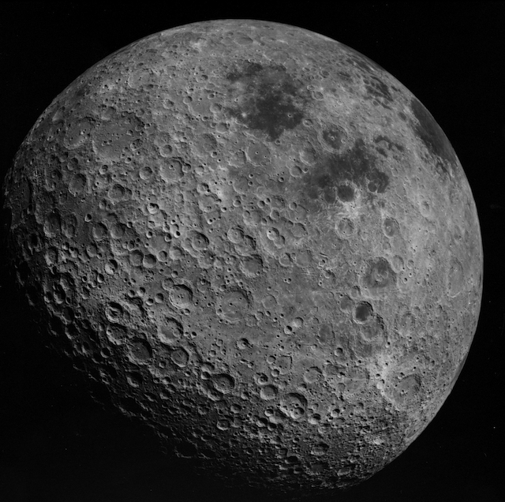
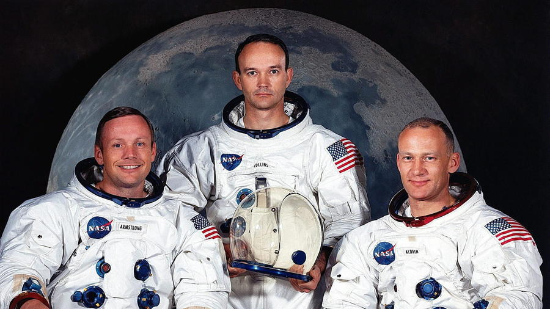

Putovanje na mjesec
Kemijski sastav Mjeseca
| Silicijev dioksid | SiO2 |
| Aluminijev dioksid | Al2O3 |
| Živo vapno | CaO |
| Željezov(II) Oksid | FeO |
| Magnezijev oksid | MgO |
| Titanijev dioksid | TiO2 |
| Natrijev oksid | Na2O |
Povijest
Apollo 11
Apollo 11 je bila svemirska misija koja je 20. srpnja 1969. dovela prve ljude na Mjesec. Svemirski let, kojeg su provele Sjedinjene Države, smatra se velikim postignućem u povijesti istraživanja i predstavlja pobjedu SAD-a u hladnoratovskoj svemirskoj utrci sa Sovjetskim Savezom.
Let do mjeseca trajao je 2 sata i 24 minute.
Lansirana je s Floride 16. srpnja, kao treća lunarna misija NASA-inog programa Apollo (i prva misija G vrste), s posadom u sastavu: zapovjednik Neil Alden Armstrong, pilot komandnog modula Michael Collins i pilot lunarnog modula Edwin Eugene "Buzz" Aldrin, Jr. 20. srpnja, Armstrong i Aldrin sletjeli su u More tišine i postali prvi ljudi na površini Mjeseca. Njihov lunarni modul, Eagle (orao), proveo je 21 sat i 31 minutu na površini Mjeseca dok je Collins orbitirao oko mjeseca u komandnom modulu Columbia. Tri astronauta vratila su se na zemlju s 21,55 kg mjesečevog kamenja, sletjevši 24. srpnja u Tihi ocean.
Apollo 11, ispunio je viziju predsjednika Johna F. Kennedyja o osvajanju Mjeseca prije Sovjetskog saveza do kraja 1960-ih, koju je izrazio tijekom govora u kongresu 1961: "Vjerujem da se ova nacija mora posvetiti postizanju cilja, prije istjeka ovog desetljeća, slijetanja čovjeka na Mjesec i njegovog sigurnog povratka na Zemlju. Nakon Apolla 11 jos pet misija programa Apollo sletjelo je na Mjesec od 1969. do 1972.
Budućnost
Novoosnovana američka kompanija Golden Spike Co. nudi vožnju do Mjeseca i natrag. Ako sada rezervirate sjedalo, platit ćete ga 750 milijuna dolara.
Tvrtku su osnovali bivši NASA-ini šefovi i omogućili ljudima da kroče tamo gdje je zadnji put ljudska noga kročila prije 40 godina - no ovaj put u komercijale svrhe. Dva su sjedala, a svako košta 750 milijuna.